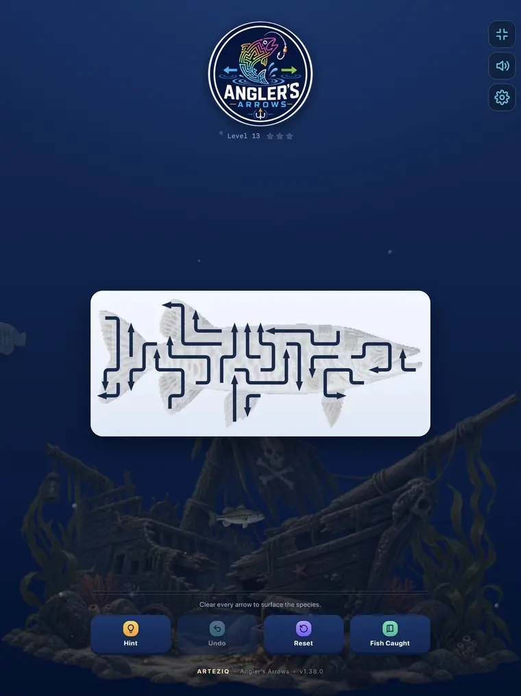
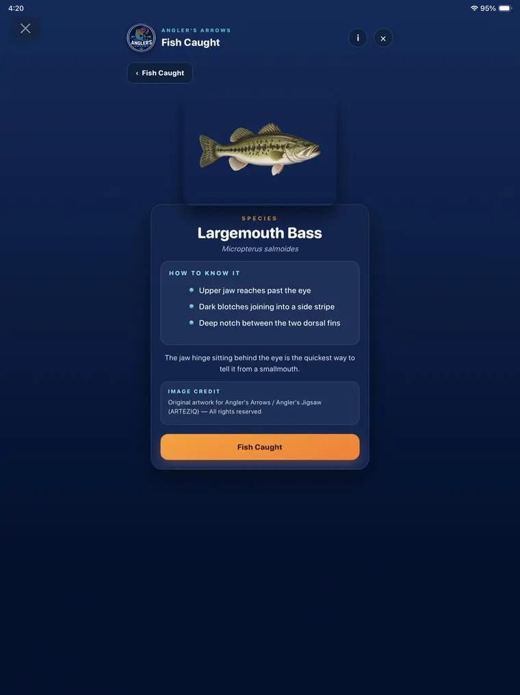

Puzzle game • Fish identification
Angler's Arrows
Clear the arrows. Reveal the catch.
Angler's Arrows turns fish identification into a satisfying puzzle. Clear every arrow to uncover a species, add it to your Fish Caught collection, and learn the visual clues that help you recognize it on the water.
- Quick, approachable arrow puzzles
- Fish revealed as each level is solved
- Species identification tips
- A growing Fish Caught collection
- Hints, undo, and reset controls
- Designed for phones and tablets